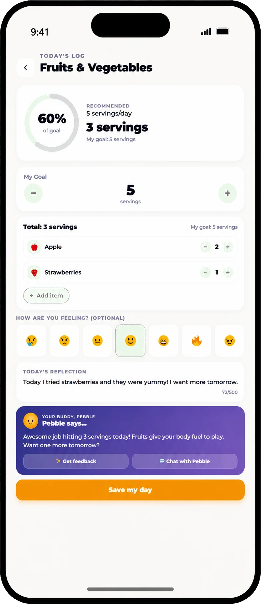

“Turn it off” is often hardest at the exact moment a child is deeply engaged. A calmer screen plan begins earlier: adults decide where media fits, tell children how an activity will end, and make the next option easy to see.
Focus on what media contains, the child using it, and what it may be crowding out. Set a few rules that apply to the family, warn before transitions, and prepare appealing offline choices. ProudMe supports awareness; it is not parental-control software.
Start with the AAP 5 Cs
The American Academy of Pediatrics’ 5 Cs give families a more useful framework than treating all screen minutes as equal:
- Child: How does this particular child respond to media? What supports or sensitivities matter?
- Content: Is it age-appropriate, trustworthy, creative, social, educational, or designed mainly to hold attention?
- Calm: Is a device becoming the only way the child can manage boredom, frustration, or transitions?
- Crowding out: Is media displacing sleep, movement, schoolwork, family connection, or other activities the child values?
- Communication: Can the family talk openly about what the child sees and does online?
Use the questions to identify the problem you actually want to solve. “Less screen time” may really mean “no videos during homework,” “devices out of bedrooms,” or “fewer arguments when a game ends.”
Create a few visible family rules
The AAP recommends a family media plan. Choose two or three boundaries the household can consistently keep:
- Name screen-free times. Examples include meals, homework blocks, family conversations, and the bedtime wind-down.
- Name screen-free places. Bedrooms overnight and the dinner table are easier to understand than “not too much.”
- Agree on an ending before starting. Use an episode, game round, or timer as the visible stopping point.
- Decide where devices rest. A shared charging spot removes repeated negotiations about location.
“You can choose one episode or 25 minutes. Before you start, tell me which ending you are choosing and what you want to do afterward.”
Make transitions less surprising
Give a warning that matches the activity: “This is the last round,” or “Ten minutes, then two minutes.” Turn off autoplay where possible. When time ends, acknowledge the feeling without reopening the limit.
“Stopping is hard when you’re having fun. The game is still finished for today. Do you want to put the device on the charger, or should I?”
If a child becomes upset, keep language short and the environment safe. The AAP’s guidance on screen-time meltdowns advises adults to stay calm, hold the boundary, and discuss the pattern after the child has regulated.
Plan what comes after the screen
Removing a highly engaging activity creates a gap. “Go do something else” makes the child invent a plan while disappointed. Prepare a short menu based on real interests:
- music, drawing, LEGO, crafts, or an audiobook;
- a snack and conversation at the table;
- walking the dog, shooting baskets, or a ten-minute outdoor mission;
- a quick household job done with an adult;
- calling or playing with a friend.
Do not make every replacement secretly educational. Rest and unstructured play matter too.
Protect bedtime—and model the rule
Move recreational screens out of the wind-down and keep devices outside bedrooms overnight when practical. Adults should follow shared boundaries at meals and charging time. A child notices if “family rule” actually means “rule for the child.”
ProudMe is not a blocking, monitoring, or device-management app. It cannot shut down another app or enforce a time limit. It can help a child name a screen habit, notice an attempt, and reflect with a caregiver.
Frequently asked questions
How much screen time should a 7- to 11-year-old have?
The AAP encourages families to consider the child, content, context, and what media crowds out rather than relying on one universal number. A pediatrician can help with individual concerns.
Should I take a device away without warning?
Immediate removal may be necessary for safety. For ordinary transitions, an agreed ending and advance warning usually make the boundary clearer.
What if homework requires a screen?
Separate required use from entertainment, build in movement and eye breaks, and keep the same bedtime and location boundaries where possible.
Is ProudMe a parental-control app?
No. ProudMe supports habit awareness and reflection. It does not block apps, filter a network, read device activity, or replace supervision.
Sources and further reading
Practice one balanced-screen habit
Choose one manageable action, notice the attempt, and keep the conversation going. ProudMe supports healthy-habit reflection; it does not provide medical care or guarantee behavior change.
